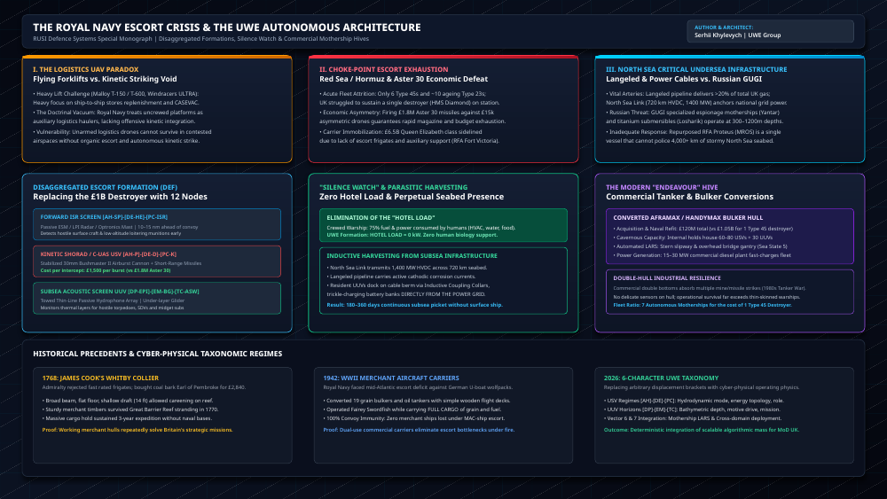

Author: Serhii Khylevych
Principal Systems Architect & Autonomous Defense Systems Integrator
Affiliation: Unmanned Warfare Engine (UWE) Architectural Group
Target Publication: RUSI Defence Systems (Royal United Services Institute, Whitehall, London)
Date: October 2026
To: The Editor, RUSI Defence Systems
From: Serhii Khylevych, Principal Systems Architect
Subject: MANUSCRIPT SUBMISSION: The Software-Defined Escort: Why Distributed Autonomous Formations and Converted Commercial Hulls Must Solve the Royal Navy's Presence and Seabed Crises
Dear Editorial Board,
The Royal Navy and the Ministry of Defence (MoD) stand at an existential crossroads. As highlighted by the protracted crisis across the Red Sea, the Bab el-Mandeb, and the Strait of Hormuz, the United Kingdom’s surface combatant fleet is grappling with an acute presence deficit. Sustaining a single Type 45 guided-missile destroyer on continuous air-defence patrol stretches naval availability to its breaking point, while expending £1.5–2.0 million Aster 30 interceptors against £10,000 asymmetric aerial and surface threats represents an unsustainable economic attrition trajectory. Concurrently, beneath the waves of the North and Norwegian Seas, the UK’s vital energy arteries—most notably the Langeled gas pipeline providing over 20% of national supply, alongside subsea HVDC interconnectors such as North Sea Link—remain acutely exposed to deep-sea sabotage by specialist Russian underwater assets, a challenge far too vast for a single repurposed commercial support vessel like RFA Proteus to counter.
While the Royal Navy has aggressively tested rotary-wing uncrewed aerial systems (such as the Malloy T-150/T-600 under the Heavy Lift Challenge) to automate intra-theatre logistics, stores replenishment, and casualty evacuation, British naval innovation has developed a profound defensive and logistics fixation. The service is engineering autonomous flying forklifts and air ambulances, while adversaries deploy distributed kinetic strike networks.
This monograph presents a cyber-physical alternative derived from four years of high-intensity operational engineering and doctrine in the Black Sea littoral: the Unmanned Warfare Engine (UWE).
Drawing upon Britain’s own defining maritime history—specifically the Admiralty’s decision in 1768 to bypass delicate, rated warships and equip Lieutenant James Cook with a sturdy Whitby coal bark (HMS Endeavour), as well as the Merchant Aircraft Carriers (MAC-ships) of the Second World War—this paper proposes a twofold operational model:
I submit this work for publication in RUSI Defence Systems to provide Whitehall planners, the Naval Staff, and NATO maritime strategists with an actionable, hardware-validated doctrine for twenty-first-century sea denial and infrastructure resilience.
Respectfully submitted,
Serhii Khylevych
Principal Systems Architect
┌─────────────────────────────────────────────────────────────────────────────┐ │ THE UWE STRATEGIC DISPLACEMENT ARCHITECTURE │ ├─────────────────────────────────────────────────────────────────────────────┤ │ LEGACY CAPITAL PARADIGM UWE DISTRIBUTED DOCTRINE │ │ • Single Type 45 Destroyer (£1.05B) • Autonomous Formation (15 Nodes)│ │ • 8,500-tonne Radar & Acoustic Target • Ultra-low RCS (<0.75m board) │ │ • Single Point of Failure • Graceful Degradation │ │ • 190 Crew "Hotel Load" (75% power/vol) • Zero Life-Support Demand │ │ • Continuous Turbine Fuel Burn • "Silence Watch" (Wave/Induct.) │ │ • £2M Aster 30 vs £15k Threats • Directed Gun/SHORAD Intercept │ │ • Tied to Fixed Naval Dockyards • Commercial Mothership Hives │ └─────────────────────────────────────────────────────────────────────────────┘
Over the past three years, the Royal Navy has positioned itself as an enthusiastic pioneer of naval uncrewed aviation. Through initiatives like the Heavy Lift Challenge (HLC), Project Vampire, and autonomous trials aboard HMS Prince of Wales and Royal Fleet Auxiliary (RFA) vessels, the service has demonstrated impressive intra-theatre logistics capabilities. Rotary-wing quadcopters, prominently the Malloy Aeronautics T-150 and T-600 (recently acquired by BAE Systems) alongside platforms like the Windracers ULTRA, have successfully transported stores, ammunition containers, and simulated casualty evacuation (CASEVAC) stretchers between ships and shore facilities.
Yet, this emphasis exposes a profound doctrinal imbalance within British naval thinking. Uncrewed systems are overwhelmingly treated as auxiliary logistics enablers—flying forklifts and air ambulances—designed to sustain a shrinking, legacy force of heavily crewed, multi-billion-pound combatants.
While British procurement evaluates whether a heavy-lift drone can lift two mortar rounds or blood plasma across a 15-mile transit, adversaries and allied littoral combatants have spent the same period operationalising autonomous platforms as distributed, massed kinetic striking instruments. In the Black Sea, asymmetric uncrewed surface platforms eliminated over a third of a major power's surface combat fleet without the deployment of a single conventional frigate. In the Red Sea and the Gulf of Aden, non-state actors shut down one of the world's primary commercial choke points using cheap, mass-produced aerial loitering munitions and surface attack craft.
The Royal Navy's current trajectory risks producing an autonomous logistical apparatus in support of a combat fleet that cannot survive long enough in contested waters to consume those supplies. What the service urgently requires is not merely more efficient ways to transfer spare parts between hulls, but a fundamental transition toward autonomous, software-defined kinetic presence.
The operational realities of the Red Sea and the Strait of Hormuz have laid bare the structural brittleness of the Royal Navy's surface combatant force structure.
┌─────────────────────────────────────────────────────────────────────────────┐ │ THE FINANCIAL & MAGAZINE ASYMMETRY │ ├─────────────────────────────────────────────────────────────────────────────┤ │ INTERCEPT COST COMPARISON: │ │ │ │ [Adversary Drone] Cost: ~£10,000–£20,000 │ │ │ │ │ ▼ │ │ [Type 45 Sea Viper] Interceptor: Aster 30 Missile (~£1,800,000) │ │ Cost Exchange Ratio: 1:90 to 1:180 │ │ Magazine Depth: 48 Sylver VLS Cells Total │ │ │ │ [UWE Kinetic USV] Interceptor: 30mm Programmable Airburst (~£1,500/burst)│ │ Cost Exchange Ratio: 10:1 in Defender's Favour │ │ Magazine Depth: Continuous Drum Re-feed │ └─────────────────────────────────────────────────────────────────────────────┘
When international shipping came under sustained attack in the southern Red Sea and Bab el-Mandeb in 2023–2024, the United Kingdom could muster only a single frontline air-defence destroyer, *HMS Diamond (Type 45), later relieved on an emergency rotational basis by ageing Type 23 frigates (HMS Richmond and HMS Lancaster***).
This deployment highlighted three systemic vulnerabilities:
The Western doctrine of sea control through scarce, hyper-expensive capital escorts has reached a mathematical dead end.
While British eyes have been drawn to the Middle Eastern choke points, the United Kingdom’s greatest domestic strategic vulnerability lies directly off its own eastern and northern shores: Critical Undersea Infrastructure (CUI) across the North Sea and the Norwegian Sea.
Unlike the English Channel, which benefits from confined, shallow hydrography and the physical enclosure of the Channel Tunnel, the UK’s energy lifeline is overwhelmingly submerged, exposed, and remote:
┌─────────────────────────────────────────────────────────────────────────────┐ │ THE NORTH SEA CRITICAL INFRASTRUCTURE BOTTLENECK │ ├─────────────────────────────────────────────────────────────────────────────┤ │ NORWAY TO UK PIPELINES & CABLES: │ │ • Langeled Gas Pipeline: 1,200 km | 20–25% of Total UK Natural Gas │ │ • North Sea Link (NSL) HVDC: 720 km | 1,400 MW Subsea Power Grid │ │ • Depth Horizon: 100 m to 1,200 m abyssal slopes │ │ │ │ THE ADVERSARY THREAT: │ │ • Russian GUGI (Main Directorate of Deep-Sea Research) │ │ • Specialized motherships (*Yantar*, *BS-64 Podmoskovye*) │ │ • Deep-submergence spy submersibles (*Losharik*, *Paltus*) │ │ • Covert seabed mapping, explosive charge placement, tap modules │ │ │ │ THE ROYAL NAVY DEFICIT: │ │ • Repurposed commercial vessel: RFA *Proteus* (MROS Ship 1) │ │ • Single-point failure: 1 ship cannot patrol 4,000+ km of seabed routes │ │ • Slow transit, high acoustic signature, weather-limited ROV deployments │ └─────────────────────────────────────────────────────────────────────────────┘
The threat to these assets is neither theoretical nor conventional. It is orchestrated by the Russian Navy's GUGI (Main Directorate of Deep-Sea Research), a dedicated deep-ocean espionage branch operating specialized motherships (such as the Yantar and Sibiryakov) and nuclear-powered deep-diving titanium submersibles (AS-31 Losharik, Paltus). Operating at depths between 300 and 1,200 metres, these platforms are engineered specifically to place dormant explosive charges on subsea manifolds, cut data trunks, or splice optical fibres.
To defend against this vast threat matrix, the Ministry of Defence purchased a single commercial offshore supply vessel, commissioning her as *RFA Proteus under the Multi-Role Ocean Surveillance (MROS)* programme.
While Proteus is a commendable rapid procurement effort, deploying a single 6,000-tonne surface vessel equipped with a crane and remotely operated vehicles (ROVs) to monitor more than 4,000 kilometres of subsea infrastructure in the violent weather of the North Sea is an operational illusion. As RUSI maritime security studies have continuously highlighted, seabed warfare cannot be deterred or detected through episodic surface patrols; it demands continuous, resident subsurface attribution. Proteus cannot be in the Norwegian Trench, the Moray Firth, and the Dover Strait simultaneously. Any competent adversary can simply observe her surface position via open-source AIS or satellite reconnaissance and strike seabed infrastructure hundreds of nautical miles away.
When confronted with complex maritime operational dilemmas, British naval history offers a profound lesson that repeatedly contradicts the Admiralty's instinct for rated, bespoke warship construction.
┌─────────────────────────────────────────────────────────────────────────────┐ │ HISTORICAL CONVERGENCE: ADAPTED WORKING HULLS │ ├─────────────────────────────────────────────────────────────────────────────┤ │ 1768: HMS ENDEAVOUR (Whitby Collier Bark) │ │ • The Admiralty rejected fast, prestigious rated frigates. │ │ • Purchased a humble coal-carrying bark for £2,840. │ │ • Flat floor, shallow draft (14 ft), massive hold capacity, rugged timber. │ │ • Safely careened on the Great Barrier Reef after grounding without dock. │ │ • Completed the greatest oceanic exploration mission of the century. │ │ │ │ │ ▼ │ │ 1942–1944: MERCHANT AIRCRAFT CARRIERS (MAC-Ships) │ │ • Acute escort shortage during the Battle of the Atlantic. │ │ • Refitted 19 commercial grain bulkers and oil tankers with flight decks. │ │ • Operated 3–4 Fairey Swordfish while CONTINUING TO CARRY FULL CARGO. │ │ • Zero merchant ships lost in any convoy escorted by a MAC-ship. │ │ │ │ │ ▼ │ │ 2026+: UWE AUTONOMOUS MOTHERSHIP CARRIER (Adapted Tanker/Bulker) │ │ • Refit commercial double-hull bulkers/tankers into Autonomous Hive Hubs. │ │ • Internal hold capacity for 50–100 USVs and UUVs with automated LARS. │ │ • Multi-megawatt commercial diesel-electric power for persistent recharge. │ │ • Fraction of the cost (£100M vs £3.5B) with massive structural resilience.│ └─────────────────────────────────────────────────────────────────────────────┘
In 1768, when the Admiralty and the Royal Society planned the legendary Pacific expedition to observe the Transit of Venus and explore the southern oceans, traditional naval orthodoxy demanded a 5th or 6th-rate naval frigate—swift, elegant, copper-sheathed, and heavily armed.
The Admiralty, guided by seasoned practical navigators, deliberately rejected the frigate. Instead, they purchased a dowdy, flat-bottomed Whitby coal bark named the Earl of Pembroke for £2,840, commissioning her as *HMS Endeavour*** under Lieutenant James Cook.
The rationale was rooted in uncompromising physical realism:
During the darkest days of the Battle of the Atlantic, the Royal Navy faced an identical escort crisis: German U-boats were mauling merchant convoys in the Mid-Atlantic Gap, while British shipyard slipways were congested and incapable of building fleet carriers quickly enough.
The Admiralty executed an extraordinary engineering pivot: they took commercial bulk grain ships and oil tankers and converted them into Merchant Aircraft Carriers (MAC-ships). A rudimentary 400-foot wooden flight deck was built over the cargo hatches, an island superstructure was attached, and three to four Fairey Swordfish anti-submarine aircraft were embarked.
The defining genius of the MAC-ship was twofold:
Today, Western navies are paralysed by the assumption that power projection can only flow from bespoke, multi-billion-pound warship designs that take fifteen years to build. History proves that Britain's greatest maritime victories repeatedly sprang from the tactical adaptation of rugged, high-capacity commercial hulls.
The core architectural tenet of the Unmanned Warfare Engine (UWE) is that modern sea control does not require an 8,500-tonne steel hull. It requires the functional roles of that hull to be executed across a distributed, survivable, algorithmic formation of specialised autonomous platforms.

Figure 1: The Royal Navy Maritime Paradox & UWE Distributed Autonomous Architecture
┌─────────────────────────────────────────────────────────────────────────────┐ │ UWE DISAGGREGATED ESCORT FORMATION (DEF) │ ├─────────────────────────────────────────────────────────────────────────────┤ │ │ │ [FORWARD ISR SCREEN: USV NODE 1] │ │ • Passive ESM / Radar / Optronics Mast │ │ • 10–15 nm ahead of commercial convoy │ │ │ │ │ ┌──────────────────────────┴──────────────────────────┐ │ │ ▼ ▼ │ │ [SHORAD/C-UAS USV NODE 2] [ASW SCREEN UUV 1] │ │ • 30mm Airburst Autocannon • Passive Sonar Array│ │ • Point-defense missile pods • Magnetic Anomaly │ │ │ │ │ │ └──────────────────────────┬──────────────────────────┘ │ │ ▼ │ │ [PROTECTED CONVOY] │ │ Container Vessels / Gas Carriers │ │ │ │ │ ┌──────────────────────────┴──────────────────────────┐ │ │ ▼ ▼ │ │ [STRIKE USV NODE 3] [ASW SCREEN UUV 2] │ │ • Surface loitering munitions • Benthic Picket Node│ │ • Electronic Warfare Jammer • Inductive Coupling │ │ │ └─────────────────────────────────────────────────────────────────────────────┘
Under the UWE framework, autonomous naval assets are classified not by arbitrary displacement bands, but by their strict cyber-physical regimes:
[AH]-[DE]-[PC]):[AH] Aquatic Operating Domain & Hydrodynamic Regime: Defined across 4 specific hydrodynamic regimes—from Displacement Mode (D) and Semi-Planing (SP) to High-Speed Planing (P) and Hydrofoil/Wave-Piercing (WP)—governing wave-slamming endurance up to Sea State 6.[DE] Drive & Energy Topology: Hybrid Diesel-Electric, Pure Electric Lithium-Iron-Phosphate (LFP), or Supercapacitor dash-charge.[PC] Payload & Combat Role: Specialized kinetic effectors, modular remote weapon stations (RWS), or electronic warfare payloads.[DP]-[EM]-[TC]):[DP] Operating Depth Horizon: Specifying functional regimes from Epipelagic Littoral (0–200 m) down to Bathypelagic Abyssal (1,000–3,000 m), aligning directly with North Sea pipeline gradients.[EM] Endurance & Motive Architecture: Resident Benthic Crawler, Low-Acoustic Buoyancy Glider, or High-Speed Interceptor.[TC] Tactical Capability: Infrastructure Health Monitoring, Covert Acoustic Picket, or Kinetic Mine Neutralisation.Instead of deploying a Type 45 destroyer to escort a commercial convoy through the Red Sea or the Bab el-Mandeb, the UWE doctrine deploys a Disaggregated Escort Formation (DEF) consisting of 8 to 12 coordinated uncrewed nodes:
If an adversary successfully launches a saturation attack and destroys one kinetic USV node, they have eliminated an attrition-tolerant £2 million platform. The remaining nodes automatically re-mesh their tactical communications via local LEO/UHF data-links and maintain the defensive screen. There is no single point of failure.
The most radical operational advantage of the UWE doctrine over conventional naval architecture lies in the physics of logistics and energy management.
┌─────────────────────────────────────────────────────────────────────────────┐ │ THE LOGISTIC COLLAPSE: CREWED VS AUTONOMOUS │ ├─────────────────────────────────────────────────────────────────────────────┤ │ TRADITIONAL WARSHIP LOGISTIC PROFILE: │ │ • 75% of fuel/power consumed by "Hotel Load": │ │ Desalination plants, galleys, HVAC cooling, sanitary pumps, lighting. │ │ • Constant turbine rotation even while stationary on picket. │ │ • Massive supply tail: Fresh food, laundry, medical, psychological rest. │ │ • Maximum mission endurance: 30–45 days before port visit required. │ │ │ │ UWE AUTONOMOUS LOGISTIC PROFILE: │ │ • Hotel Load = 0 kW. Zero humans aboard. │ │ • "Silence Watch" (Режим ждуна): 98% systems dormant in passive mode. │ │ • Wave/Solar Harvesting: Continuous station-keeping with zero fuel burn. │ │ • Inductive Parasitic Harvesting from Subsea HVDC Cables (North Sea Link). │ │ • Residual Logistics Envelope = STRICTLY MUNITIONS & INTERCEPT FUEL. │ │ • Mission endurance: 180–360 days continuously on station. │ └─────────────────────────────────────────────────────────────────────────────┘
Onboard a Type 45 destroyer or Type 23 frigate, between 70% and 80% of total electrical power and internal volume is dedicated to one single requirement: keeping 190 to 220 human beings alive and operational at sea:
Because a human crew requires constant air conditioning, lighting, and hot water, the warship’s diesel generators and gas turbines must run continuously 24 hours a day, 365 days a year, burning thousands of litres of fuel even when the ship is sitting completely stationary on radar picket duty.
For an autonomous UWE formation, the Hotel Load is precisely zero.
There are no living quarters, no galleys, no fresh-water requirements, and no human fatigue cycles. When an uncrewed platform is on station, it does not consume power to support biology.
In contested waters or across vast infrastructure corridors, the primary posture of a UWE formation is Silence Watch:
While in Silence Watch, the UWE platforms replenish their operational battery reserves without consuming a single drop of fuel:
By offloading propulsion to wave physics, sensors to ambient energy, and resident recharge to inductive infrastructure, the catastrophic naval logistics tail collapses down exclusively to two discrete components:
Logistics is transformed from an unrelenting daily hotel-load crisis into an on-demand, post-engagement replenishment cycle.
To deploy and sustain these distributed autonomous formations across global theatres—from the Norwegian Sea to the Persian Gulf—the Royal Navy does not need new £1 billion escort vessels or uncrewed ships built from scratch at specialised naval yards.
It needs a contemporary implementation of James Cook's Whitby collier and the Second World War MAC-ship: The Autonomous Mothership Carrier (AMC).
┌─────────────────────────────────────────────────────────────────────────────┐ │ THE AUTONOMOUS MOTHERSHIP CARRIER (AMC) │ ├─────────────────────────────────────────────────────────────────────────────┤ │ PLATFORM BASELINE: Converted Aframax Tanker / Handymax Bulk Carrier │ │ ACQUISITION COST: $35M (Commercial Hull) + $85M (Navalized Conversion) │ │ DISPLACEMENT: 60,000 to 110,000 Deadweight Tonnes (DWT) │ │ │ │ INTERNAL RECONFIGURATION: │ │ • Tank/Hold 1 & 2: Automated USV Staging Bays (Capacity: 40–60 USVs) │ │ • Tank/Hold 3: UUV Subsea Wells with Moonpool (Capacity: 20–30 UUVs) │ │ • Tank/Hold 4: Containerized Munitions Storage & Automated Ammo Hoists │ │ • Tank/Hold 5: Heavy Fuel & Charging Depot (30 MW Generation Capacity) │ │ │ │ OPERATIONAL FEATURES: │ │ • Stern Ramp & Gantry LARS: Launch/recovery up to Sea State 5. │ │ • Double-Hull Resilience: Can absorb multiple mine/missile strikes. │ │ • Minimal Crew: 25–35 personnel total (supervising autonomous C2/systems). │ │ • Commercial Maintenance: Supported by any commercial shipyard globally. │ └─────────────────────────────────────────────────────────────────────────────┘
For less than £150 million total, the Royal Navy can field a self-sufficient, heavy uncrewed mothership capable of commanding an entire theatre's autonomous littoral screen. For the price of one single Type 45 destroyer (£1.05 billion), the UK could field a fleet of seven autonomous mothership carriers, dispersing hundreds of autonomous combat platforms across the North Sea, the Mediterranean, and the Indo-Pacific.
This commercial mothership architecture aligns flawlessly with the grand strategic principles of the nineteenth-century Pax Britannica. During the Victorian era, Great Britain secured command of the global commons not through continuous, high-speed open-ocean patrols, but through the establishment of an indelible global network of Imperial Coaling Stations—anchored at Gibraltar, Malta, Aden, Colombo, Singapore, Hong Kong, and the Falkland Islands.
These strategic forward bases served three foundational roles:
In the twenty-first century, the Autonomous Mothership Carrier (AMC) becomes the mobile, floating realization of the Victorian coaling station. It is a persistent forward presence, an edge-compute C4ISR node, and a secure communications relay.
Yet it achieves a profound evolutionary leap: while nineteenth-century coaling stations were passive logistical depots requiring dedicated warships for their defence, the modern converted commercial mothership is an organic kinetic hub. It does not merely wait to refuel passing ships; it actively launches and commands distributed surface and subsea strike platforms to neutralise emerging threats directly.
Conventional naval architects frequently dismiss commercial conversions on the grounds of speed: "An Aframax tanker or bulk carrier is slow, cruising at merely 12 to 14 knots; it cannot replace a 30-knot destroyer."
This objection fundamentally confuses tactical sprint velocity with operational responsiveness:
[AH-P], Vector 1) and autonomous interceptors, launched down her automated stern slipway within minutes of detection.Persistent physical presence at the point of need decisively outmatches sprint transit latency.
To escape the trap of naval shrinkage and secure Britain's maritime lifelines, the Ministry of Defence should implement four immediate doctrinal shifts:
[AH]-[DE]-[PC]) and depth horizons ([DP]-[EM]-[TC]) into UK Maritime Capability Planning to enable modular, cross-domain hardware-software integration across the armed forces.This monograph forms part of the ongoing operational research series of the Unmanned Warfare Engine (UWE), authored by Serhii Khylevych (Principal Systems Architect). All taxonomic parameters, hydrodynamic regime classifications, and operational architectures described herein are derived from open-source engineering principles, historical British naval records, and declassified lessons from recent littoral conflicts. No classified North Atlantic Treaty Organisation (NATO) or United Kingdom Ministry of Defence technical materials were utilised in the compilation of this study.